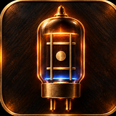

Automātiski: lietotne pati atrod tuvāko stīgu. Pieskaries stīgai, lai skaņotu tieši uz to, vēlreiz, lai atgrieztos automātiskajā režīmā.
Labākam rezultātam: kluss fons, telefons tuvu ģitārai, viena stīga reizē. Lasījums nostabilizējas pusotras sekundes laikā pēc uzsitiena.